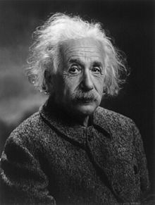

HayatıAlman İmparatorluğu'nun Ulm kentinde dünyaya gelen Einstein, yaşamının ilk yıllarını Münih'te geçirdi. Lise eğitimini ve yüksek eğitimini İsviçre'de tamamladı; fakat bir üniversitede iş bulmada yaşadığı zorluklar nedeniyle bir patent ofisinde müfettiş olarak çalışmaya başladı. 1905 yılı Einstein için bir mucize yıl oldu ve o dönemde kuramları hemen benimsenmemiş olsa da ileride fizikte devrim yaratacak olan dört makale yayımladı. 1914 yılında Max Planck'ın kişisel ricası ile Almanya'ya geri döndü. 1921 yılında fotoelektrik etki üzerine çalışmaları nedeniyle Nobel Fizik Ödülü'ne layık görüldü. Nazi Partisi'nin iktidara yükselişi nedeniyle 1933'te Almanya'yı terk etti ve Amerika Birleşik Devletleri'ne yerleşti. Ömrünün geri kalanını geçirdiği New Jersey eyaletinin Princeton ilçesinde hayatını kaybetmiştir. Albert Einstein, özel görelilik ve genel görelilik kuramları ile iki yüzyıldır Newton mekaniğinin hakim olduğu uzay anlayışında bir devrim yaratmıştır. Sadece matematik hesaplamalar ve denklemler ile oluşturduğu kuramları sonradan deneysel olarak defalarca doğrulanmıştır. E = mc2 denklemi ile formüle ettiği kütle-enerji eşdeğerliği yıldızların nasıl enerji oluşturduğuna açıklama getirmiş ve nükleer teknolojinin önünü açmıştır. Fotoelektrik etki ve Brown hareketine getirdiği matematiksel açıklamalar, modern fiziğe diğer katkıları arasındadır. Ömrünün büyük bir kısmını bütün kuramları birleştiren bir birleşik alan kuramı yaratmaya çalışarak geçirmiş ama bu çabaları sonuçsuz kalmıştır. Einstein kuantum mekaniğinin bazı sonuçlarına, özellikle belirsizlik ilkesine oldukça şüpheci yaklaşmış fakat bu yaklaşımlar ileride geniş kabul görmüştür. Einstein, Nazilerin nükleer bomba geliştirmesi endişesiyle ABD başkanı Roosevelt'e bir mektup göndermiş, ABD'nin nükleer çalışmalara başlamasını tavsiye etmiştir. Holokost sonrası Yahudilerin kendi ülkelerine sahip olması gerektiği fikrini savunmuş, İsrail'in kuruluşuna destek vermiştir. Çeşitli söyleşilerinde Yahudilik dinine ve diğer kutsal kitaplara inanmadığını belirtmiş, sosyalizme sempati duyan bir makale yayımlamıştır. Bertrand Russell ile birlikte nükleer silahlara karşı bir manifesto da yayımlamıştır. 1999'un sonlarında 100 ileri gelen fizikçiyle gerçekleştirilen milenyum oylamasında Einstein, tüm zamanların en iyi fizikçileri arasında 1. sırayı almıştır.[1][2] Einstein, hayatı boyunca 300’den fazla bilimsel makale yayımlamıştır, ayrıca 150’den fazla bilim dışı çalışmaları da olmuştur. Başarıları ve eserleri nedeniyle Einstein sözcüğü, “dahi” ile eş anlamlı olarak kullanılmaya başlanmıştır. |
 |
Çocukluğu ve eğitimiAlbert Einstein 14 Mart 1879’da Almanya’nın Ulm kasabasında dünyaya geldi.[3] 1880 yazında ailesi Münih’e taşındı.[3] Münih’te babası Hermann Einstein ve amcası Jakob bir elektrik şirketi kurdular. Annesi Pauline Einstein yetenekli bir piyanistti.[4] Albert iki buçuk yaşındayken kız kardeşi Maja dünyaya geldi. Okula başlamadan önce konuşma zorlukları yaşıyordu, annesi ve babası kaygılanarak onu doktora götürmüşlerdi.[5] Dört beş yaşlarında hasta bir şekilde yataktayken babası neşelendirmek için ona manyetik bir pusula vermişti. Pusula ibresinin hareketini o yaşta oldukça gizemli bulmuştu ve kendisinde büyük bir merak uyandırmıştı.[6] Hermann ve Pauline Einstein Yahudi kökenli bir çiftti fakat dindar değillerdi.[4] Dini vecibelerden daha çok çocuklarının eğitimini düşünüyorlardı. Einstein beş yaşına geldiğinde onu evlerinin yakınlarında daha iyi eğitim verdiğini düşündükleri bir Katolik Hristiyan ilkokuluna yazdırdılar.[7] Einstein okula başladıktan sonra okuldaki sıkı disiplinden ve ezberci anlayıştan rahatsız olmaya başlamıştı.[8] Ama okul ile hoşnutsuzluğuna rağmen yüksek notlar alıyordu. |
|
Bilimsel çalışmaları |
|
Özel görelilik kuramı19. yüzyılın sonlarında Michelson-Morley deneyi, ses ve başka dalga olaylarının tersine, ışık hızının referans sistemine göreceli olmadığını göstermişti.[21] O dönemde sesin hava aracılığıyla yayıldığı gibi ışığın da esir denen gizemli bir ortamda yayıldığı düşünülüyordu.[21] Einstein, ışık hızının sabit olduğunu ve ışığın yayılması için esir ortamının gerek olmadığını ve mekan zaman ve hareketin izafi olaylar olduğunu düşündü.[25] Çalışmalarının sonucuna varırken iki ilkeyi varsaydı: görelilik ilkesi sabit hızla hareket eden bütün gözlemciler için geçerlidir ve ışığın hızı bütün gözlemciler için c'dir.[26] Einstein'ın kuramı ile sabit hızla hareket eden iki gözlemcinin matematik hesap ile aynı olayın gözlemcilere göre yer ve zamanı belirlenebiliyor.[26] Bu kuram, Newton'un her yerde aynı işleyen, herkes için aynı "mutlak zaman" fikrini yıkıyordu.[26] E=mc² düşüncesinin kökeni bu kuramdır. |
|
Genel görelilik kuramıÖzel görelilik kuramı düzgün, doğrusal ve ivmesiz hareket eden sistemlerle sınırlıydı.[27] Genel görelilik kuramı ise birbirine göre ivmeli hareket eden sistemleri de kapsıyordu. Birinci kuram, kapsamı daha geniş olan ikinci kuramın özel bir hali sayılabilir.[27] Genel görelilik, gravitasyon kavramına yeni bir bakış açısı getirdi.[27] Klasik mekanikte gravitasyon, kütlesel nesneler arasında çekim gücü olarak algılanıyordu.[27] Örneğin dünyayı yörüngede tutan, kütlesi daha büyük Güneş'in çekim gücüydü.[27] Genel görelilik kuramına göre ise gezegenleri yörüngelerinde tutan, yörüngenin yer aldığı uzay kesiminin Güneş'in kütlesel etkisinde kavisli bir yapı oluşturmasıdır.[27] Genel kuram ayrıca gravitasyon ile eylemsizlik ilkesini "gravitasyon alanı" adı altında birleştirdi |
|
Kütle-enerji eşitliğiAlbert Einstein, enerjinin ışık hızının karesiyle maddenin kütlesinin çarpımına eşit olduğunu bularak kendisine kadar süregelen bir yargıyı yıkarak bilim dünyasında yeni bir çığır açmıştır. Ondan öncesinde kütle ile enerji arasında bir bağlantı kurulmamıştır ve ayrı olgular oldukları varsayılmıştır. 19. yüzyılda kimyagerlerin hassas aygıtları olmadığı için kimsenin dönüşüm sonrası kütle kaybından haberleri yoktu. Basit tepkimeler sonrası oluşan kütle kaybı fark edilememişti. Einstein ise bütün bilinenleri yıkarak çağdaş bilimin temel taşlarını atmıştır. Ona göre her şey enerjidir, yani maddeler de çok yoğun enerjilerdir. Kimyasal reaksiyonlar sonrası küçük de olsa kütlenin bir kısmı enerjiye dönüşmektedir. Bu durumu açıklamak için eşitliğin az farklı formülasyonu E=mc² ilk defa Albert Einstein tarafından 1905'te ünlü makalelerinde yayımlanmıştır. Aynı yıl önermiş olduğu özel görelilik kuramının bir sonucu olarak türetmiştir. |